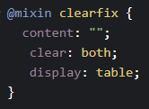
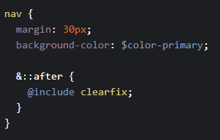
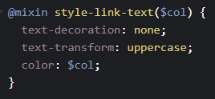
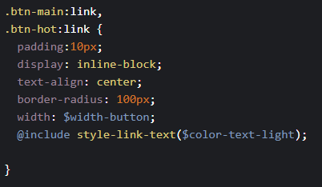

Check the clearfix class solution for when the child elements are floating causing the parent element to colapse
the normal solution is to add the clearfix class to the parent element:
html, body {
font-size: 16px;
width: 80vm;
}
header {
font-size: 150%;
padding: 2em;
margin-bottom: 10rem;
height: 90vh;
width: 1000px;
}
.header-child {
font-size: 3em;
padding: 10%;
}
the normal solution is to add the clearfix class to the parent element:
mixin declaration with no arguments
mixin with no argument use
declaration of a mixin with an argument
mixin with an argument use
Function declaration
Function use
Extends are similar to mixins, but they operate in different ways.
When you use mixins you are inserting all of the mixin at that point on the SCSS code, but with extends you are actually inserting the, selector where it used, at the extend declaration. This can be strange but look at the CSS generated and it will make sense.
Extends declaration
Extends use
To install the sass npm package:
adding Sass compilation script to package.json
note that we are specifing the Sass main file and the target css file
the -w flag tells the node-sass package to look out and compile on change of any related Sass files
something to note is the fact that if you add a file
or change the name of a file then you need to restart the script
or it
will ignore the change on that file
to start auto compilaton on file change (save), just run the script
another very useful tool is live server, which will update and serve the page on change of any of the files.
need to change the target browser to be Chrome
Install package for live server globally:
To run it just navigate to the project folder and type:
To change from default browser:
See the package page for more useful flags
if everything is good the main page for the project should open on the specified browser
note: need to investigate further but, if you are compiling sass start that first then start live-server. Found that if you do it the other way around it may not work.
direct child selector
the selector will select all the imediate childs but not the sub childs
col-1-of-4
col-1-of-4